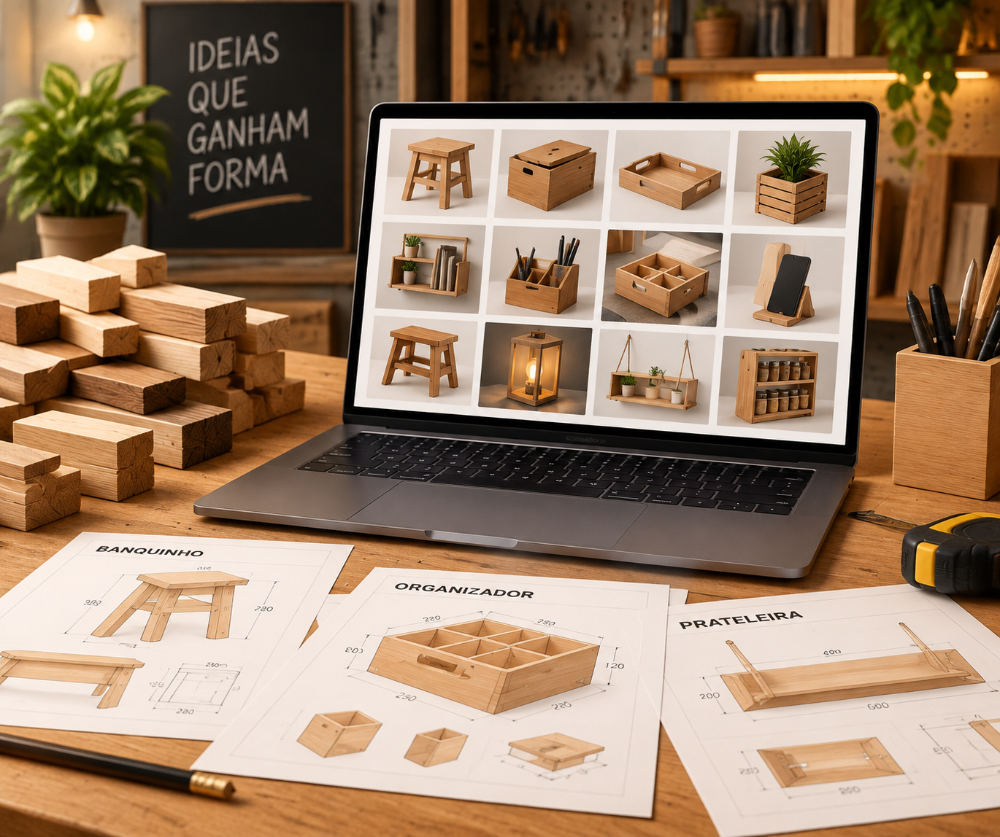
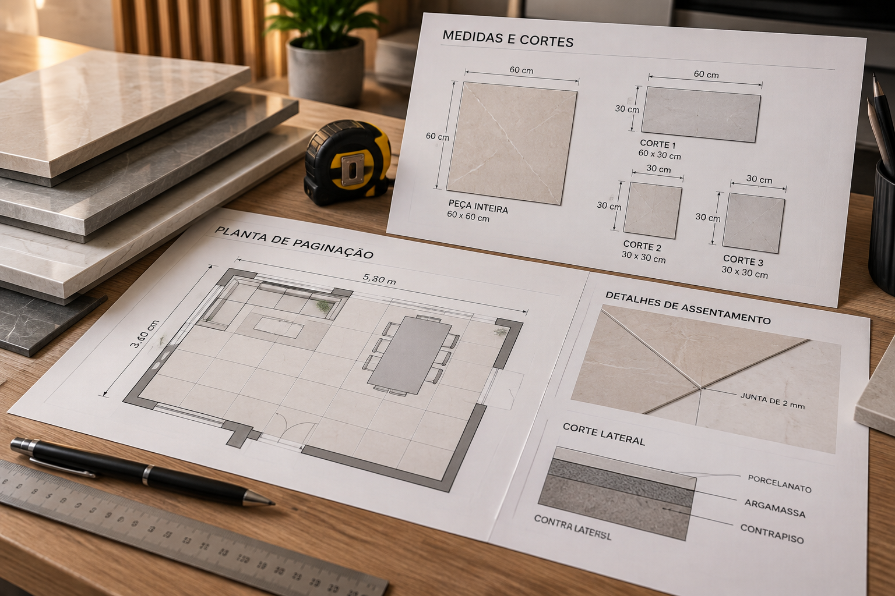
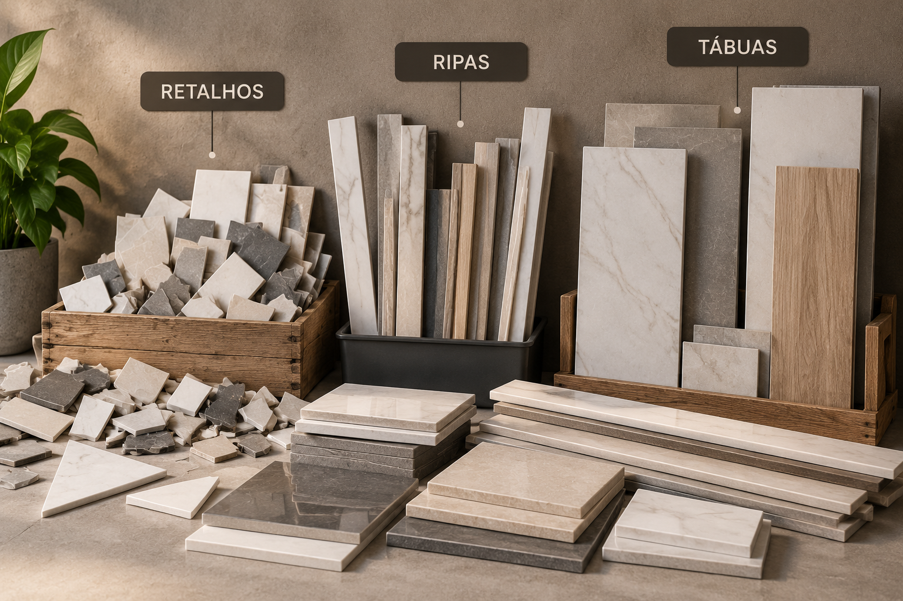
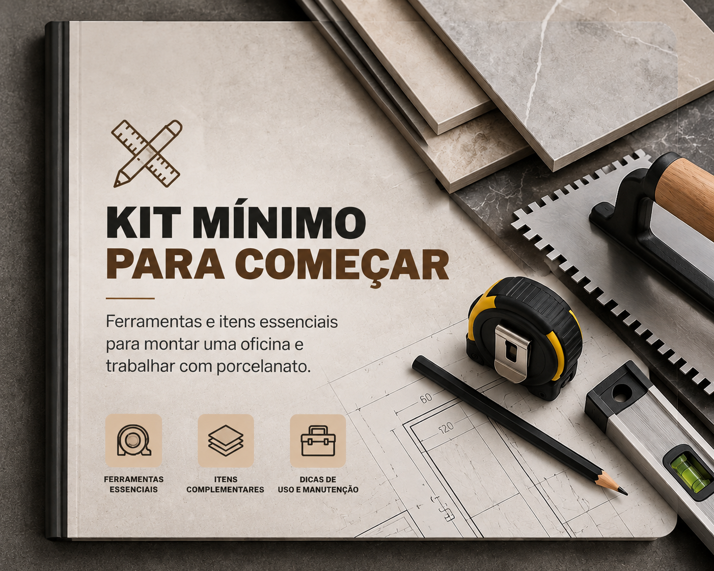
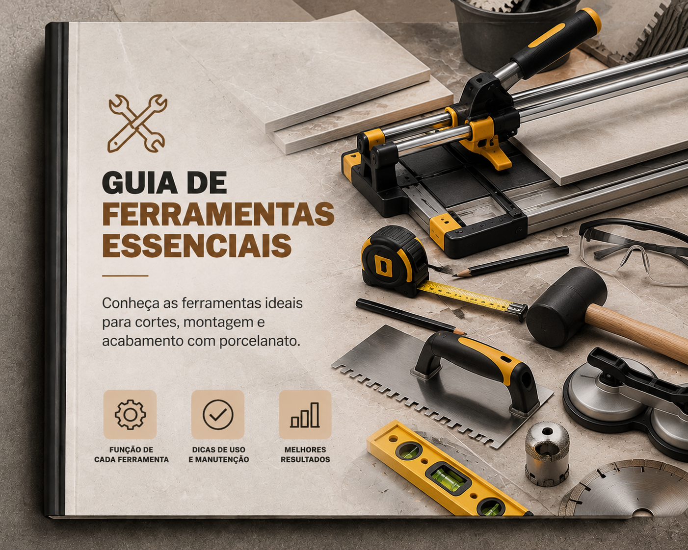
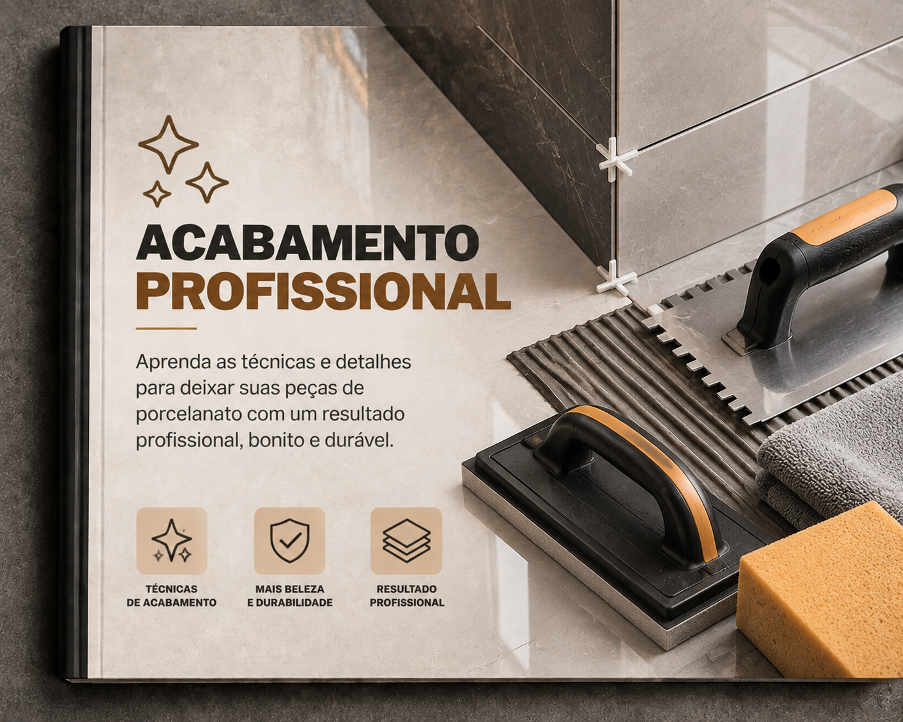
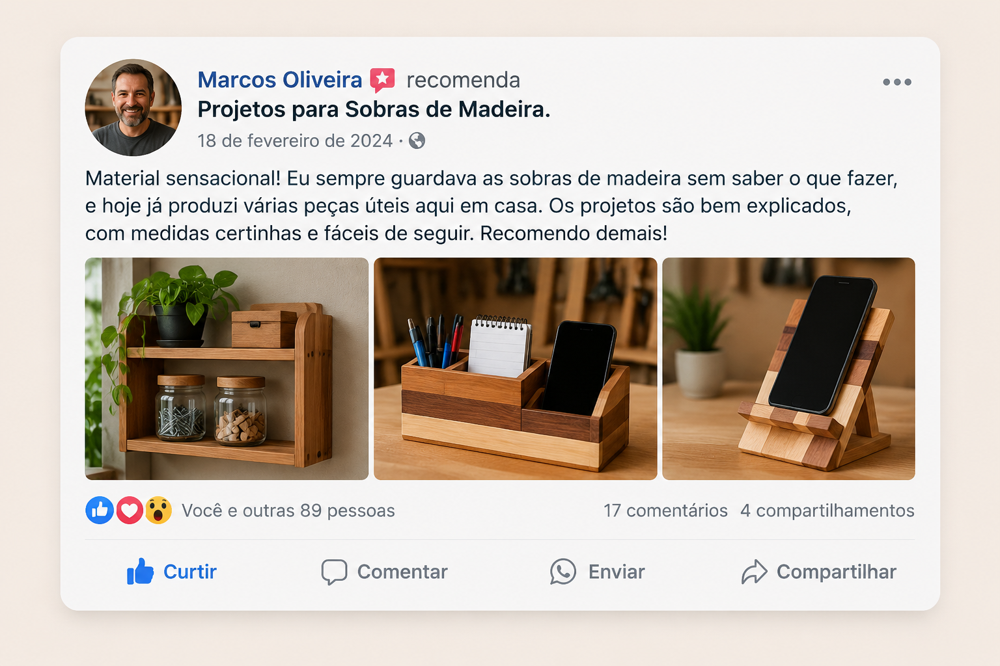
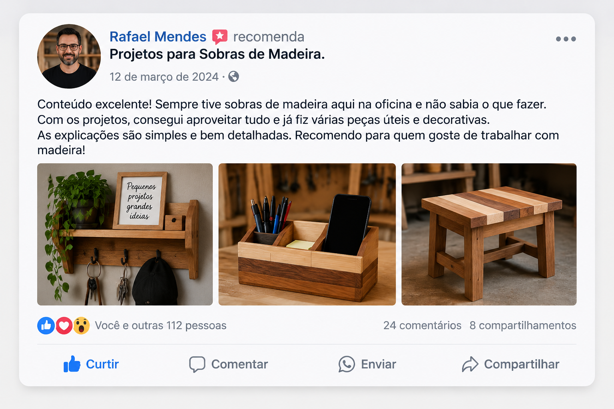
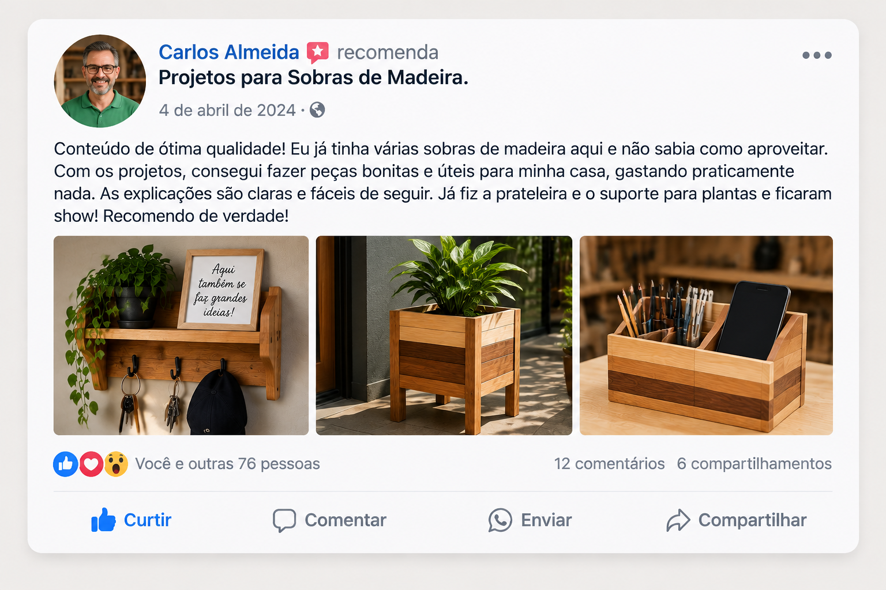

Pare de deixar pedaços de madeira acumulando ou indo para o lixo. Tenha acesso a projetos prontos com ideias, medidas e orientações para transformar retalhos de madeira em peças incríveis.
Pagamento único • Acesso imediato
Escolha o projeto, confira as medidas e comece a construir.
Encontre ideias para aproveitar desde pequenos pedaços até sobras maiores de madeira.
Tenha uma referência clara para saber como cortar, montar e executar cada peça.
Transforme materiais que estavam parados em objetos úteis, decorativos ou vendáveis.
Existem projetos para diferentes formatos e tamanhos de sobras de madeira.
Escolha um projeto, veja a referência e comece a construir.
Acesso completo por apenas
Aquele pedaço que parece pequeno ou sem utilidade pode ser exatamente o material necessário para criar uma nova peça.
Antes de comprar madeira nova, descubra dezenas de projetos que podem ser construídos usando o que você já possui.
Crie organizadores, suportes, pequenas mesas, prateleiras, itens decorativos e diversas outras peças.
Utilize os projetos para sua casa, oficina ou até mesmo como inspiração para criar peças comercializáveis.
Cada sobra tem um projeto esperando. Qual será o seu primeiro?
Mais de 300 ideias esperando pelo pedaço de madeira certo.
Um acervo completo de projetos para você parar de olhar para uma sobra de madeira sem saber o que fazer com ela.

Projetos de diferentes estilos e tamanhos para transformar madeira reaproveitada em peças funcionais, decorativas e criativas.

Tenha referências de dimensões, cortes, montagem e execução para facilitar a construção de cada projeto.

Projetos pensados para pequenos retalhos, ripas, tábuas, pedaços médios e sobras maiores.
Veja alguns dos tipos de peças que você encontra no acervo:
Além dos +300 projetos, você ainda recebe materiais complementares para facilitar seus primeiros trabalhos.

Um guia objetivo mostrando as ferramentas e itens essenciais para começar sem precisar montar uma oficina profissional.

Entenda quais ferramentas podem facilitar cortes, montagem, acabamento e execução dos projetos.

Aprenda princípios básicos para deixar suas peças mais bonitas e com aparência muito mais bem finalizada.
Clique no botão de compra e finalize seu pedido de forma segura.
Após a confirmação, você recebe as instruções para acessar todo o material digital.
Abra o material pelo celular, tablet ou computador, escolha um projeto e use as referências para começar sua peça.



+300 Projetos para Sobras de Madeira
Pagamento único
Acesso digital • Pagamento único
O que outros descartam, você transforma em valor.
Seus dados são protegidos durante o pagamento.
Após a confirmação você recebe as instruções para acessar o conteúdo.
Sem assinatura ou cobrança mensal.
Consulte seus projetos sempre que precisar.
Tire suas dúvidas sobre os projetos